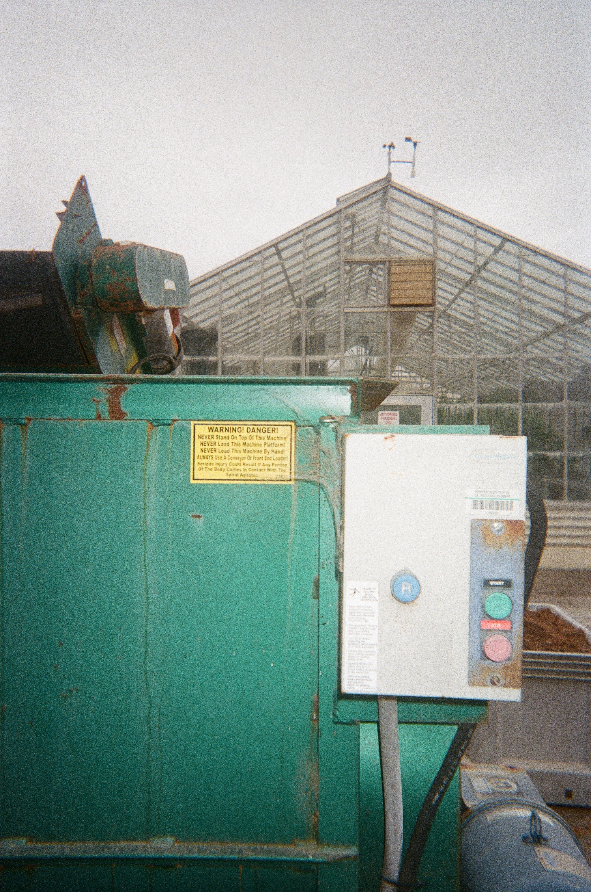

1 / 10

The entrance to the Horticulture Unit is located at the end of Via Carta, past the baseball fields and opposite the Oppenheimer Family Equine Center
2 / 10

Alison Snyder is a biology senior with a minor in soil science. She has worked at the Horticulture Unit for more than a year and her favorite building is this one, the Foliage Production House.
3 / 10

Outside of her job, Snyder has a large plant collection of her — over 20 plants. She will get a lot from her coworkers.
4 / 10

The succulent house stores all of the mother plants, which assistants cut and pot to be sold. WHen they're in bloom, Snyder says they can sometimes get beautiful flowers. Snyder had also just watered all the roses, but they are not flowering yet.
5 / 10

Caption Two
6 / 10

Cal Poly has integrated the three separate degree programs of crop science, fruit science and environmental horticultural science into a combined plant sciences major that will allow you to specialize in one of three concentrations students select during their freshman year: environmental horticultural science, fruit and crop science or plant protection science.
7 / 10

Industrial-grade machine used to break up the soil the horticulture unit uses.
8 / 10

Putting a whole bag of soil in here breaks it up quickly.
9 / 10

A lot of research is done at the unit, as it also functions as classroom space. This is a test to see how plans grow under different hues of light. Snyder says the results have not been finalized yet. It was 90 degrees in the room.
10 / 10

Caption Three
❮
❯